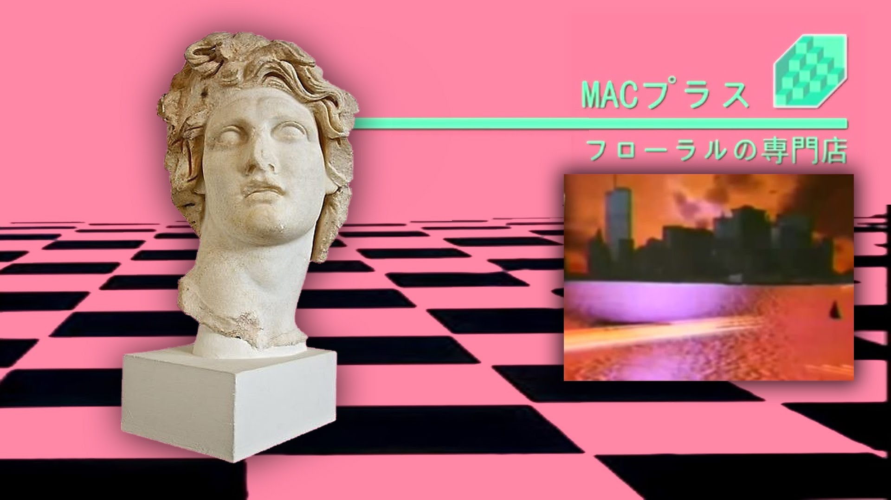
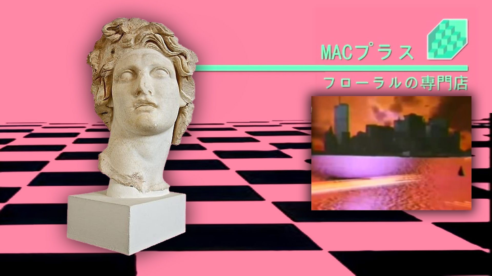

Macintosh
Features elements that would come to exemplify the vaporwave aesthetic, including retro computer imagery, Japanese lettering, and pixelated graphics.
 Retrowave
Retrowave The Retrowave is very much inspired by the '80s, but is mostly an idealized futuristic version of the '80s.
read more ...Vaporwave originated on the Internet in the early 2010s as an ironic variant of chillwave and as a derivation of the work of hypnagogic pop artists such as Ariel Pink and James Ferraro, who were also characterized by the invocation of retro popular culture.[38] It was one of many Internet microgenres to emerge in this era, alongside witch house, seapunk, shitgaze, cloud rap, and others.[39] Vaporwave coincided with a broader trend involving young artists whose works drew from their childhoods in the 1980s.
"Chillwave" and "hypnagogic pop" were coined at virtually the same time, in mid-2009, and were considered interchangeable terms. Like vaporwave, they engaged with notions of nostalgia and cultural memory. Among the earliest hypnagogic acts to anticipate vaporwave was Matrix Metals and his album Flamingo Breeze (2009), which was built on synthesizer loops. Around the same time, Daniel Lopatin (Oneohtrix Point Never) uploaded a collection of plunderphonics loops to YouTube surreptitiously under the alias sunsetcorp. These clips were taken from his audio-visual album Memory Vague (June 2009). Washed Out's "Feel It All Around" (June 2009), which slowed down the 1983 Italian dance song "I Want You" by Gary Low, exemplified the "analog nostalgia" of chillwave that vaporwave artists sought to reconfigure.
Features elements that would come to exemplify the vaporwave aesthetic, including retro computer imagery, Japanese lettering, and pixelated graphics.
